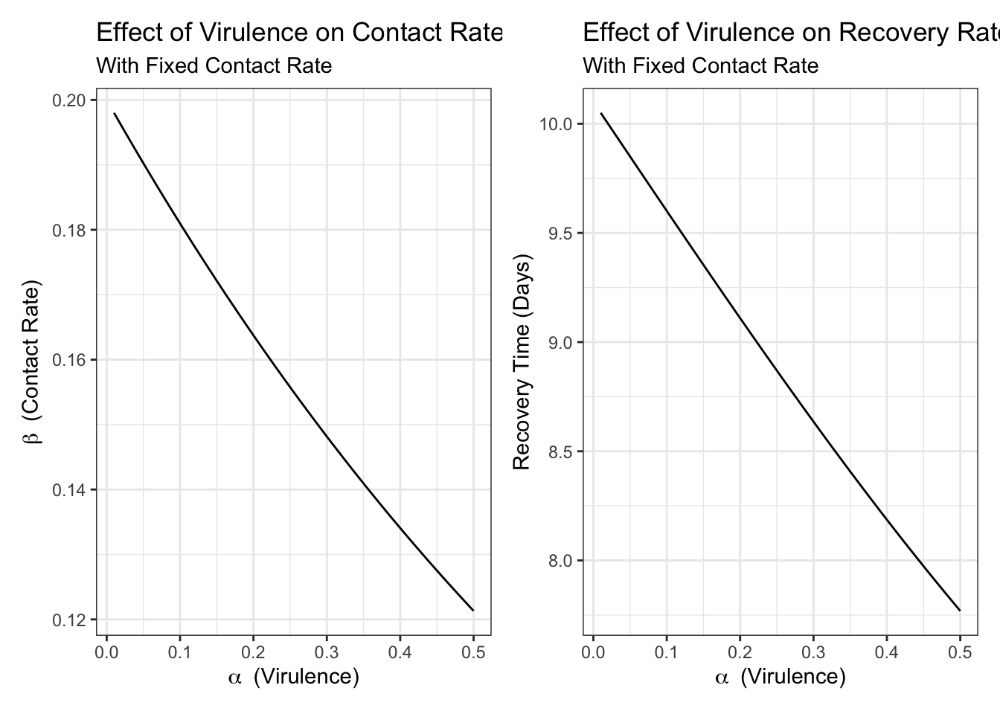
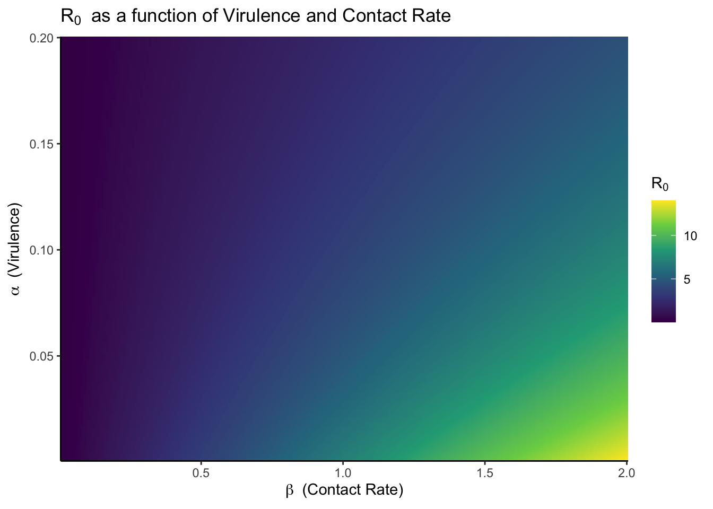

![]()
library(tidyverse)
library(patchwork)
beta_star <- function(beta, alpha){
beta * exp(-alpha)
}
gamma_star <- function(gamma, alpha){
log_curve <- function(k, x, x0){
1/(1+exp(-k*(x-x0)))
}
recovery_time <- 1/gamma
recovery_time_star <- recovery_time * (.5+log_curve(-2,alpha,.02))
1/recovery_time_star
}I have been re-reading Anderson and May. Each time I come back to the book I find gems that are highly salient to what’s going on the world today. The gems that I read yesterday was about viral evolution and virulence1. The question was about pathogens becoming more virulent over time vs less virulent and this role in transmission. They set it out in the following familiar equation for the basic reproduction number:
\[ R0 = \frac{\beta(\alpha,N)}{\alpha+\mu+\gamma(\alpha,N)} \]
Where contact rate and recovery time are both some functions of the population density and the virulence of the pathogen. For example a highly virulent pathogen may result in fewer contacts per person and a shorter recovery time (because it kills the host faster).
Simulating What This Means
’ I think it is always good to explore these relationships through simulation just to see the impacts.
First we can define some functions for \(\beta\) and \(\gamma\). In both cases, we can say that they are monotonically decreasing with virulence (\(\alpha\)). Thinking here that for the modelled pathogen if the mortality rate increases the period of time that you are infectious decreases at some rate and similarly you are less likely to have many additional contacts. This could be a bad assumption depending on the pathogen, but for exploratory purposes let’s go with it.
Now we can create a simulation grid to explore these functions:
p1 <- expand.grid(beta = .2,
alpha = seq(.01,.5,.01)) %>%
mutate(beta_star = beta_star(beta, alpha)) %>%
ggplot(aes(alpha, beta_star))+
geom_line()+
labs(
title = "Effect of Virulence on Contact Rate",
subtitle = "With Fixed Contact Rate",
y = expression(beta~" (Contact Rate)"),
x = expression(alpha~" (Virulence)")
)+
theme_bw()p2<-expand.grid(gamma = .1,
alpha = seq(.01,.5,.01)) %>%
mutate(gamma_star = gamma_star(gamma, alpha)) %>%
ggplot(aes(alpha, 1/gamma_star))+
geom_line()+
labs(
title = "Effect of Virulence on Recovery Rate",
subtitle = "With Fixed Contact Rate",
y = "Recovery Time (Days)",
x = expression(alpha~" (Virulence)")
)+
theme_bw()p1+p2
Impact on R0
We can pull all of this together into a function for R0 as described initially by Anderson and May (ignoring the impact of population density, N, in this case):
r0 <- function(beta, alpha=.01, mu = 1/(365*75), gamma = 1/7){
# Beta is Some function of Virulence, alpha
beta_star_in <- beta_star(beta,alpha)
gamma_star_in <- gamma_star(gamma, alpha)
beta_star_in/(alpha + mu + gamma_star_in)
}We can then explore the surface generate over a range of virulence and contact rates.
sim_grid <- expand.grid(beta = seq(.01,2,.01),
alpha = seq(.001,.2,.001))
pred <- with(sim_grid, r0(beta,alpha))
dat <- cbind(sim_grid, r0 = pred)
ggplot(data= dat, aes(beta, alpha, fill = r0))+
geom_raster()+
scale_fill_viridis_c()+
theme_classic()+
coord_cartesian(expand = FALSE)+
labs(
y = expression(alpha~" (Virulence)"),
x = expression(beta~" (Contact Rate)"),
fill = expression(R[0]),
title = expression(R[0]~" as a function of Virulence and Contact Rate")
)
We can see that there is a transmission advantage for having a high contact rate and a lower virulence, but it exists on a spectrum with local maximums for a given contact rate. This is just a simple simulation using artificially generated functions. This analysis would be better informed with real data, but it is worthwhile endeavor to explore these relationships as we talk about evolution of the SARS-CoV-2 virus.
Footnotes
Degree of disease caused by the virus↩︎
Reuse
Citation
BibTeX citation:
@online{dewitt2021,
author = {Michael DeWitt},
title = {Thinking {About} {Viral} {Evolution}},
date = {2021-10-09},
url = {https://michaeldewittjr.com/programming/2021-10-09-thinking-about-viral-evolution},
langid = {en}
}
For attribution, please cite this work as:
Michael DeWitt. 2021. “Thinking About Viral Evolution.”
October 9, 2021. https://michaeldewittjr.com/programming/2021-10-09-thinking-about-viral-evolution.